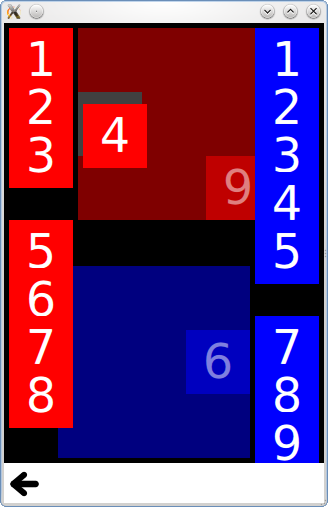

Qt Quick Examples - Drag and Drop
This is a collection of QML drag and drop examples.

Drag and Drop is a collection of small QML examples relating to the drag and drop functionality. For more information, visit the Drag and Drop page.
Running the Example
To run the example from Qt Creator, open the Welcome mode and select the example from Examples. For more information, visit Building and Running an Example.
Tiles
Tiles adds drag and drop to simple rectangles, which you can drag into a specific grid.
It has a DragTile component which uses a MouseArea to move an item when dragged:
Item { id: root property string colorKey width: 64; height: 64 MouseArea { id: mouseArea width: 64; height: 64 anchors.centerIn: parent drag.target: tile onReleased: parent = tile.Drag.target !== null ? tile.Drag.target : root Rectangle { id: tile width: 64; height: 64 anchors.verticalCenter: parent.verticalCenter anchors.horizontalCenter: parent.horizontalCenter color: colorKey Drag.keys: [ colorKey ] Drag.active: mouseArea.drag.active Drag.hotSpot.x: 32 Drag.hotSpot.y: 32 states: State { when: mouseArea.drag.active ParentChange { target: tile; parent: root } AnchorChanges { target: tile; anchors.verticalCenter: undefined; anchors.horizontalCenter: undefined } } } } }
And a DropTile component on which the dragged tiles can be dropped:
DropArea { id: dragTarget property string colorKey property alias dropProxy: dragTarget width: 64; height: 64 keys: [ colorKey ] Rectangle { id: dropRectangle anchors.fill: parent color: colorKey states: [ State { when: dragTarget.containsDrag PropertyChanges { target: dropRectangle color: "grey" } } ] } }
The keys property of the DropArea will only allow an item to be dropped on it if it has a matching key in its Drag.keys property.
GridView Example
The GridView Example adds drag and drop to a GridView, allowing you to visually reorder the delegates without changing the underlying ListModel. It uses a DelegateModel to move a delegate item to the position of another item it is dragged over.
model: DelegateModel {
delegate: DropArea {
id: delegateRoot
width: 80; height: 80
onEntered: visualModel.items.move(drag.source.visualIndex, icon.visualIndex)
property int visualIndex: DelegateModel.itemsIndex
Binding { target: icon; property: "visualIndex"; value: visualIndex }
Rectangle {
id: icon
property int visualIndex: 0
width: 72; height: 72
anchors {
horizontalCenter: parent.horizontalCenter;
verticalCenter: parent.verticalCenter
}
radius: 3
color: model.color
Text {
anchors.centerIn: parent
color: "white"
text: parent.visualIndex
}
DragHandler {
id: dragHandler
}
Drag.active: dragHandler.active
Drag.source: icon
Drag.hotSpot.x: 36
Drag.hotSpot.y: 36
states: [
State {
when: icon.Drag.active
ParentChange {
target: icon
parent: root
}
AnchorChanges {
target: icon
anchors.horizontalCenter: undefined
anchors.verticalCenter: undefined
}
}
]
}
}